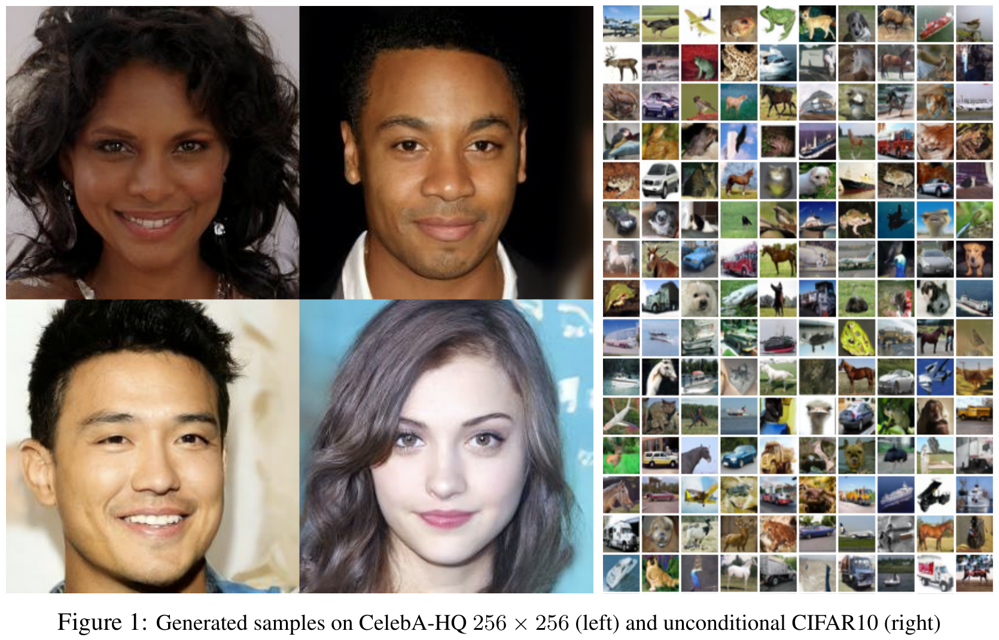
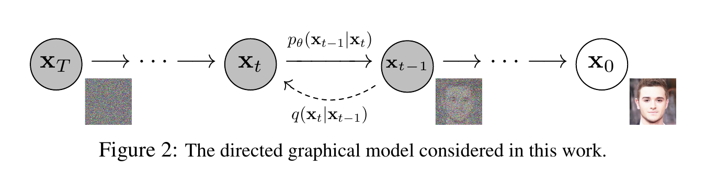
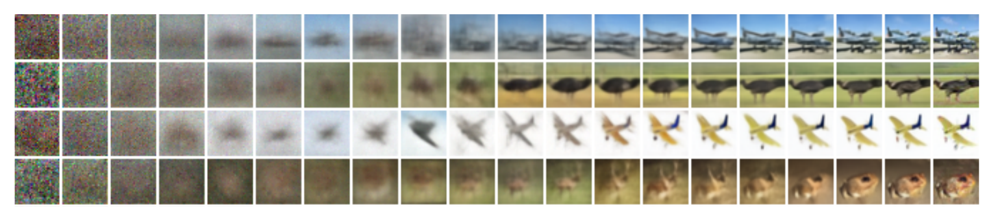
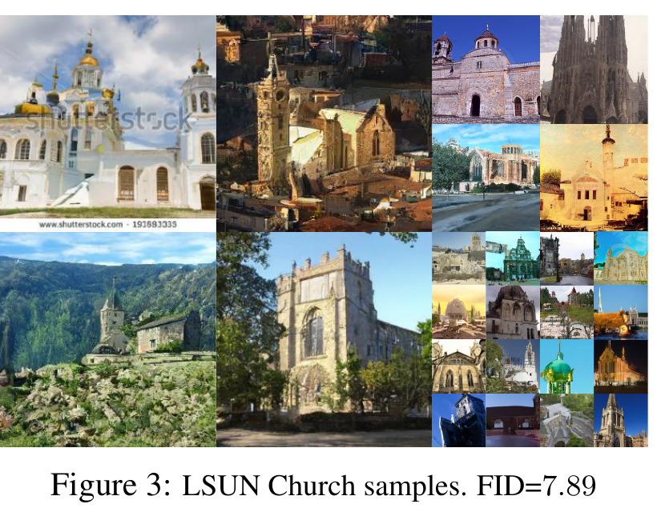
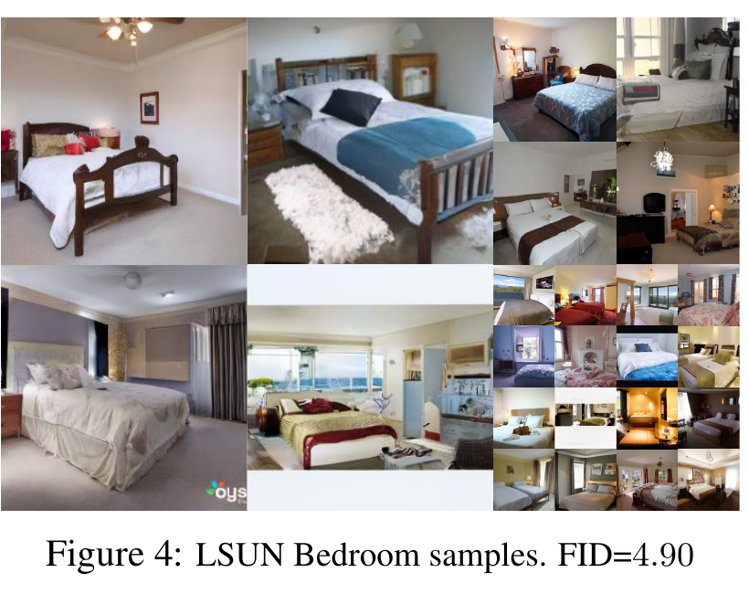
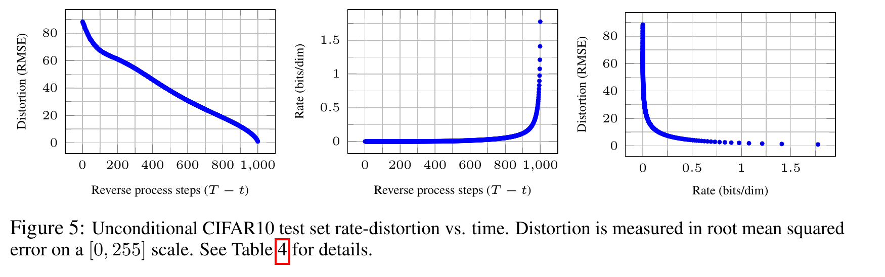
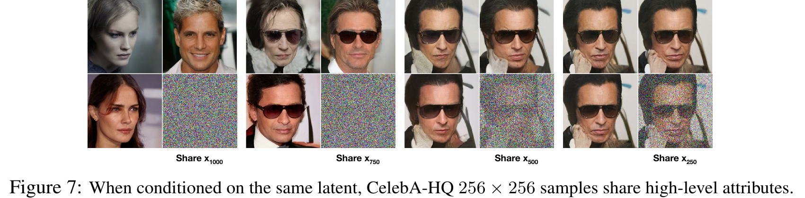

Direct global generation
Start with random noise and produce a sample through one global generator. The learning signal must shape the entire transformation at once.
Generative modelling · noise-time · NeurIPS 2020
Destroy an image with a known sequence of tiny Gaussian errors. Then learn the conditional route back. DDPM turns one difficult act of invention into one thousand local corrections.
Learning target. At minute 60, you should be able to derive a noisy sample, explain why predicting noise parameterizes the reverse mean, execute one reverse step, distinguish the true variational bound from Lsimple, and interpret Figure 6 without calling it one-shot generation.
A natural image distribution is sharply structured and multimodal; a standard Gaussian is simple to sample. A one-step map from one to the other must discover global layout, object identity, texture, and pixel detail at once. Earlier diffusion models supplied a likelihood-based route, but the paper notes that high-quality image synthesis had not yet been demonstrated with them.
Ho, Jain, and Abbeel ask how to make the journey locally learnable. Their answer is to design the destructive path first. If every forward corruption step is known, small, and Gaussian, then learning can focus on reversing local damage rather than inventing a global transformation from scratch.

Start with random noise and produce a sample through one global generator. The learning signal must shape the entire transformation at once.
Fix a Markov chain that gradually destroys data. Learn Gaussian reverse conditionals that estimate the distribution of the previous state from the current noisy state and its time.
The paper also tests a more specific baseline inside the diffusion family: predict the tractable posterior mean μ̃t directly. Its proposed parameterization predicts the added noise ε instead. Both can represent the reverse mean, but ε-prediction pairs especially well with the simplified objective and gives the paper’s best samples.
If , write with . This reparameterization exposes which part is predictable and which part is sampled.
The next state depends only on the current state. Forward diffusion uses ; generation learns .
is generally unknown, but is a Gaussian with a closed-form mean and variance. Training knows x0.
With fixed reverse variance, the KL between the tractable posterior and learned Gaussian reduces, up to constants and weights, to squared error between their means.
Self-supervision is already present. We choose the forward noise ε used to create xt. The model therefore gets an exact target without class labels or manual annotation.
| Symbol | Role | Typical image-batch shape |
|---|---|---|
| x₀ | Clean data sample drawn from q(x0). | B × C × H × W |
| xₜ | The same sample after t forward corruption steps. | B × C × H × W |
| βₜ | Known variance added at forward step t; the paper fixes a linear schedule. | scalar per t, broadcast |
| αₜ, ᾱₜ | ; is cumulative signal retention. | scalar per t, broadcast |
| ε | Standard Gaussian noise used to create a training example xt; it is the known target. | B × C × H × W |
| εθ(xₜ,t) | Timestep-conditioned network prediction of ε. | B × C × H × W |
| μθ(xₜ,t) | Mean of the learned reverse Gaussian, computed from xt and εθ. | B × C × H × W |
| z | Fresh Gaussian noise added while sampling a reverse step; z=0 at t=1. | B × C × H × W |
| q | Fixed forward/corruption distribution and training posterior. | distribution, not a tensor |
| pθ | Learned reverse/generative Markov chain. | distribution, not a tensor |

At one step, retain most of xt−1 and add isotropic Gaussian noise with variance βt:
Define and . Gaussian composition gives the crucial shortcut:
This equation is more than notation. It lets training choose any t uniformly and create xt in one operation. No training example needs to traverse all preceding forward steps.
The target is not “recover whatever corruption happened.” The training code knows that ε=0.5 because it sampled it.
The paper uses T=1000 and βt increasing linearly from 10−4 to 0.02. The instrument computes ᾱt from that schedule, rather than using an illustrative replacement.
The sampled-noise coefficient. For this schedule, , so while .
At t=600, ᾱt≈0.02588. The clean-signal coefficient is 0.161 and the sampled-noise coefficient is 0.987.
Static reading: the default t=600 is already noise-dominated. At t=0 the coefficients are 1 and 0; by t=1000 they are approximately 0.006 and 1.000.
Training can calculate the forward posterior because it knows x0. The posterior is Gaussian:
Now substitute:
The same mean can be written using ε, so a network that predicts ε also parameterizes the reverse mean:
The reverse sample adds the chosen reverse standard deviation σt times fresh z:
No. The prediction gives the correct reverse mean for the local transition. At t>1, σtz keeps that transition stochastic, and xt−1 is an intermediate state rather than the clean endpoint.
Reuse x2≈1.9616, α2=0.8, ᾱ2=0.72, β2=0.2, and εθ=0.5.
The exact ε prediction recovered the correct posterior mean, not a deterministic clean sample. This is why “the network removes all noise in one pass” is the wrong mental model.
The negative log-likelihood variational bound decomposes into an endpoint prior term, Gaussian reverse-transition KL terms, and a decoder term:
For fixed σt2I and the ε parameterization, each intermediate KL term is, up to a θ-independent constant:
This equation supplies the bridge: variational inference has become weighted noise-prediction regression. The simplified objective deliberately drops that timestep-dependent coefficient:
Lsimple is therefore not the unchanged likelihood bound. The paper describes it as a weighted variational bound that emphasizes different reconstruction aspects. In its schedule, it down-weights small-t terms relative to the standard bound, letting learning focus more on harder, noisier denoising tasks.
Suppose one sampled corruption component is ε=0.50 and the network predicts 0.40. Its unweighted contribution is (0.50−0.40)²=0.01. If another component has ε=−1.20 and prediction −0.70, its contribution is (−0.50)²=0.25. The second error contributes 25 times as much to Lsimple.
The gradient with respect to a predicted component is 2(εθ−ε): it points directly toward the known corruption. The expectation simply repeats this correction over images, timesteps, and Gaussian draws.
On page 5, the paper reports a U-Net backbone similar to an unmasked PixelCNN++, with group normalization throughout. The same parameters are shared across timesteps. A Transformer-style sinusoidal position embedding tells the network t, and self-attention is used at the 16×16 feature-map resolution.
Not reliably. The coefficients in the reverse mean depend on t, and the meaning of a pixel pattern changes with signal-to-noise level. The timestep embedding disambiguates the requested denoising regime.

Figure 6 is a process trace on CIFAR-10. The paper also reports unconditional 256×256 samples on two LSUN scene datasets. These are visual examples, not a numerical comparison or proof of coverage; the metrics below answer a different question.


| Unconditional CIFAR-10 setting | IS | FID | NLL test (train), bits/dim |
|---|---|---|---|
| True bound L, ε-prediction, fixed isotropic Σ | 7.67 ± 0.13 | 13.51 | ≤ 3.70 (3.69) |
| Lsimple, ε-prediction | 9.46 ± 0.11 | 3.17 | ≤ 3.75 (3.72) |
Source: paper Tables 1 and 2, PDF page 5. Lower FID and higher IS favor Lsimple for sample quality, while the true variational bound gives the better codelength. The paper computes its headline FID 3.17 against the CIFAR-10 training set; against the test set it reports FID 5.24.
No. The same table reports a better NLL for the model trained on the true bound. FID, Inception Score, and NLL measure different properties; the paper explicitly notes that its likelihoods are not competitive with other likelihood-based models.
The forward process is not just a training convenience. The paper uses it for progressive lossy compression: transmit enough information to reconstruct an earlier diffusion state, then sample the remaining reverse steps. Figure 5 makes the rate–distortion trade-off visible.

Finally, the paper starts several reverse trajectories from the same partially noised latent. Figure 7 is a small demonstration that broad attributes can persist while samples vary; it is not an evaluation of controllability.

Not in the reported implementation. The formulation allows βt to be learned by reparameterization, but the experiments fix a linear schedule from 10−4 to 0.02.
No. The selected parameterization predicts ε at a specified t. The reverse mean follows from that prediction, and generation applies 1000 successive reverse transitions.
No. It drops the timestep-dependent weighting from the intermediate variational terms. The paper calls it a weighted variational bound and observes different sample-quality and codelength behavior.
No. The paper establishes a connection to denoising score matching, but ε-prediction is related to the score by a noise-level-dependent scale. Treating them as numerically identical hides that scale.
It is designed to be extremely close to N(0,I), not asserted to be exactly independent at finite T. The paper reports LT≈10−5 bits per dimension for its schedule.
The variance of the Gaussian noise added at forward step t; αt=1−βt is the one-step signal-retention factor.
Cumulative signal retention from x0 to xt. √ᾱt multiplies x0, while √(1−ᾱt) multiplies ε.
Composing the Gaussian forward transitions yields the closed-form q(xt|x0), so xt can be sampled with one ε draw.
It is a tractable Gaussian target for the learned reverse transition because training knows x0.
Substitute the predicted noise into:
ε creates a noisy training input and is its regression target. z is newly sampled noise used in a stochastic reverse transition, with z=0 at t=1.
Lsimple removed the timestep-dependent coefficient on the ε-prediction squared error and samples t uniformly.
Along one reverse sampling trajectory, the inferred clean-image estimate acquires large-scale structure before fine detail. The columns are progressive x̂0 estimates, not independent samples.
From the VAE lesson: both optimize a variational bound with latent variables, but DDPM fixes a long encoder-like corruption chain whose latents have the same dimensionality as the image. From ResNet: generation becomes repeated local correction rather than one monolithic transformation. From Transformer: sinusoidal position embeddings are repurposed as noise-time coordinates inside the U-Net. From GANs: DDPM replaces an adversarial game with a known-noise regression target; this brings likelihood accounting but, in the original paper, a much longer sampling path.
The new branch in your map is score-based generative modelling: predict how to move a noisy point toward regions of higher data density, across many noise scales. DDPM reaches that branch through a finite variational Markov chain and an ε parameterization.
Native intuition: choose a forward corruption that is easy to sample and easy to reason about; use clean data to reveal the ideal local reverse target; predict the exact noise you added; and compose those local corrections from Gaussian noise back to data. When you meet a diffusion model, ask four things: what forward process is fixed, what the network predicts, how the training terms are weighted, and how many reverse steps sampling must pay for.